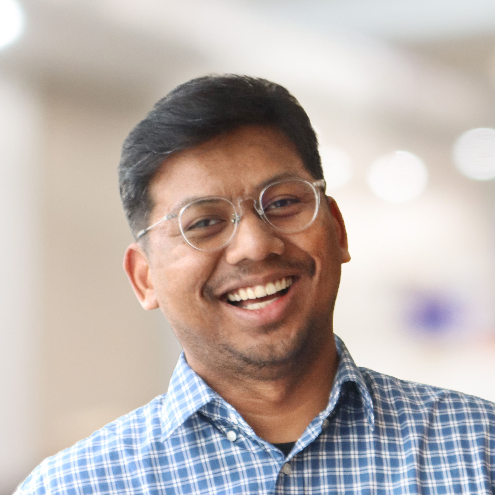

I Putu Febry Kusuma
Urban Designer · Arup, Cities Planning & Design
Profile
Experienced urban designer with over eight years of practice across Southeast Asia, specialising in masterplanning, spatial strategy, public realm design, transit-oriented development and climate-responsive urban transformation. I translate complex site, policy, infrastructure and stakeholder inputs into clear design frameworks, spatial strategies and visual communication material.
My work sits at the join between design thinking and spatial data — using analysis to test whether a plan actually performs, not only how it looks. This site is a personal sandbox for that idea: taking layers that normally live inside desktop GIS and making them openable by anyone with a browser.
What I do
Masterplanning
Land use structure, parcel sizing, phasing and development parameters for large-scale sites.
Spatial analysis
GIS-based suitability, accessibility, density and network studies using ArcGIS Pro, QGIS and FME.
Web mapping & digital delivery
GIS–CAD–FME workflows and lightweight interactive maps that make project geodata shareable.
Software & skill levels
Filter by category — bars animate to my self-assessed level of literacy.
Selected project experience
Click any project to expand.
Work experience
Delivering masterplanning, TOD, urban regeneration and strategic planning projects across Southeast Asia within Arup's Cities, Planning and Design practice. Leading spatial analysis and urban design studies, developing masterplans and client-facing material, coordinating multidisciplinary inputs, and supporting stakeholder engagement and proposal development.
Architecture and urban development projects associated with Indonesia's new capital, Nusantara — concept through design development, regulatory and sustainability research, and BIM-based documentation for government and client stakeholders.
Typological and urban form studies of historic Milanese architecture, analytical drawings and international competition submissions.
Design studio facilitation, technical instruction and student mentoring across Architecture Design Studio and Building Technology courses.
Urban design, public space, housing and regeneration projects for local governments and community-based initiatives — concept to development, 3D design solutions and visual communication.
Qualifications
- MSc Architecture and Urban Design — Politecnico di Milano
- Professional Architect Program — Universitas Indonesia (Hons)
- Bachelor of Architecture — Universitas Indonesia (Hons)
Professional associations
- Member, Indonesian Institute of Architects (IAI)
- Member, Indonesian Institute of Urban Designers (IARKI)
Certifications & training
- Esri CityEngine Advanced Training — Esri, 2025
- Illustrator 2024 Essential Training — LinkedIn, 2024
- Introduction to FME Desktop — Arup, 2023
- ArcGIS Pro Training — Arup, 2022
- Autodesk AutoCAD Certified User — Autodesk, 2016
- Microsoft Office Specialist PowerPoint 2013 — Microsoft, 2016
- Adobe Certified in Graphic Design & Illustration (Illustrator CS6) — Adobe, 2016
Publications
- Kusuma, I Putu Febry (2022). Bali: In-Between Global and Local — Rethinking Culture and Tradition Integration in a Contemporary Housing Complex in Denpasar, Bali. Politecnico di Milano, Italy.
- Kusuma, I Putu Febry (2018). Enhancing People's Well-being in an Urban Context: Biophilic Manggarai Railway Station. Universitas Indonesia.
- Departemen Arsitektur (2018). Bima, Antara Padi & Arsitektur. Universitas Indonesia, Depok.
About this site
Built as a static site — three HTML pages, one stylesheet, no build step and no framework. The map
runs on Mapbox GL JS and reads GeoJSON served from the /data folder, so adding a new layer
means dropping in a file and adding one entry to a list.
Get in touch
- Email — febry.kusuma@arup.com
- Phone — +628 222 111 2884
- LinkedIn / Portfolio — available on request
- Based in — Jakarta, Indonesia (internationally mobile)